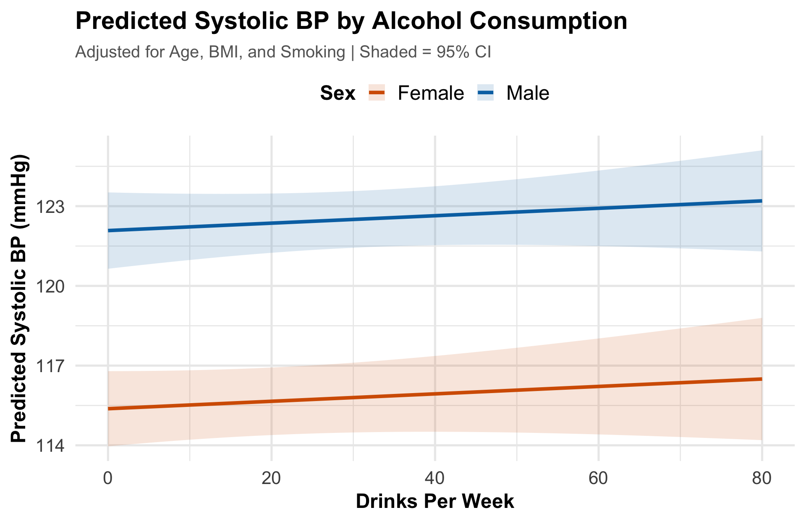

data("NHANES") # Load built-in dataset
analysis_data <- NHANES %>%
filter(Age >= 20, Age <= 65) %>% # Adults only
filter(!is.na(BPSysAve), !is.na(AlcoholDay), # Drop missing values
!is.na(BMI), !is.na(SmokeNow),
!is.na(Gender)) %>%
mutate(
drinks_per_week = AlcoholDay * 7, # Daily → weekly
current_smoker = ifelse(SmokeNow == "Yes", 1, 0), # Binary coding
drink_category = cut(AlcoholDay * 7, # Categorize drinkers
breaks = c(-Inf, 0, 7, 14, Inf),
labels = c("None", "Light", "Moderate", "Heavy"))
) %>%
select(ID, Gender, Age, BMI, drinks_per_week, # Keep key variables
drink_category, current_smoker, BPSysAve) %>%
distinct(ID, .keep_all = TRUE) # Remove duplicatesAI-Assisted Statistical Analysis in Graduate Epidemiology Education
Integrating Claude with RStudio for Teaching Regression Methods
Muntasir Masum, PhD
Department of Epidemiology & Biostatistics
University at Albany, SUNY
AI+ Annual Symposium 2026
2026-02-28
What if your students had a 24/7 AI teaching assistant
that understood their data, their code, and their questions?
Today we’ll see exactly how that works.
Workshop Roadmap
📋
Context · 15 min
The teaching challenge & how AI fits in
💻
Live Demo · 45 min
Coding, analysis, visualization & debugging
💬
Discussion · 15 min
Implementation, integrity & Q&A
Who Is This For?
Educators
Teaching quantitative methods
Students
Learning R & statistics
Researchers
Working with data
Anyone
Curious about AI + analysis
No assumptions about: R experience · Statistics background · Epidemiology knowledge
The Teaching Challenge
The Problem
-
Syntax frustration overshadows statistical thinking -
Limited support outside office hours -
Steep learning curve for R -
Debugging takes all the time
The Goal
- Focus on interpretation, not syntax
- On-demand, contextual guidance
- Iterative, scaffolded learning
- Students become analytical thinkers
AI bridges this gap — Students get instant, context-aware help so they can focus on understanding, not debugging.
Office hours at 2am? Not ideal. Claude at 2am? Always available, never annoyed.
Three Ways to Use Claude + RStudio
Claude Chat
Copy code & output from RStudio, paste into Claude Desktop App
Most accessible
ClaudeR + Cowork
ClaudeR connects RStudio to Claude — Claude sees your data and assists in real time
Today’s focus
Claude Code
Full AI agent in the terminal — autonomous coding & execution
Most powerful
Today’s focus: Demonstrating AI-assisted statistical analysis workflows using ClaudeR + Claude Cowork
Claude Chat: Interpreting Output
The simplest workflow — no setup needed
- Run your analysis in RStudio
- Copy the output from the console
- Paste into Claude and ask a question
. . .
Works today: All you need is claude.ai — free tier is enough to get started.
👤 “I ran this regression in R. Can you explain the output?”
Coefficients:
Estimate Std. Error t value Pr(>|t|)
(Intercept) 101.4821 2.1538 47.12 < 2e-16 ***
Age 0.3048 0.0275 11.09 < 2e-16 ***
Gendermale 4.8215 0.9012 5.35 1.1e-07 ***
🤖 “This tells you that for each additional year of age, systolic blood pressure increases by about 0.3 mmHg, holding other variables constant. Males have BP about 4.8 mmHg higher than females on average…”
Claude Chat: Debugging Errors
When something breaks — Claude explains why
Students often get stuck on cryptic R errors. Copy-pasting into Claude gets instant, clear explanations.
. . .
Why this works: Claude can recognize common R errors and suggest fixes without needing to see your full environment. Perfect for beginners.
👤 “I’m getting this error in R:”
Error in ggplot(data, aes(x = age, y = bp)) : could not find function "ggplot"
🤖 “You need to load the ggplot2 package first. Add this line before your plot code:”
library(ggplot2) # or library(tidyverse)
ClaudeR: The Easiest Starting Point
What it does: Connects RStudio directly to Claude Desktop app
- Claude can see your loaded data and R environment
- Chat in Claude Desktop, run code in RStudio
- Perfect for students new to AI workflows
. . .
Install: devtools::install_github(“IMNMV/ClaudeR”)
GitHub: github.com/IMNMV/ClaudeR
Let’s See It in Action
Coding · Analysis · Visualization · Debugging
Today’s Research Question
Does alcohol consumption predict blood pressure?
Dataset: NHANES 2017-2018 · Outcome: Systolic BP (mmHg) · Exposure: Alcohol drinks/week
Student Question: Coding
I need to prepare my NHANES data for regression analysis. I want adults aged 20-65, exclude missing values, and create a drinks-per-week variable. How do I do this in R?
Claude’s approach: Filter age range → Select variables → Handle missing data → Create derived variables
Live Code Output
Claude suggests: Use filter() for age range, mutate() for new variables, and handle missing data explicitly
Pro Tip: glimpse() gives you a better overview than str() for tidy data
A Look at the Data
Rows: 1,174
Columns: 8
$ ID <int> 51630, 51677, 51678, 51691, 51715, 51723, 51732, 51734…
$ Gender <fct> female, male, male, female, male, male, male, male, fe…
$ Age <int> 49, 33, 60, 57, 49, 28, 32, 25, 21, 27, 26, 30, 58, 35…
$ BMI <dbl> 30.57, 28.54, 25.84, 20.66, 29.13, 25.45, 20.15, 27.06…
$ drinks_per_week <dbl> 14, 21, 42, 7, 42, 21, 84, 35, 21, 49, 49, 7, 28, 7, 7…
$ drink_category <fct> Moderate, Heavy, Heavy, Light, Heavy, Heavy, Heavy, He…
$ current_smoker <dbl> 1, 0, 0, 0, 1, 1, 1, 1, 1, 1, 1, 1, 1, 0, 0, 1, 1, 1, …
$ BPSysAve <int> 112, 128, 152, 122, 122, 93, 124, 117, 120, 110, 99, 1…Student Question: Analysis
I need to run a multiple regression with blood pressure as outcome and alcohol, age, BMI, smoking, and sex as predictors. How do I interpret the results?
Fitting the Model
Claude explains: Use lm() for linear regression. Formula syntax: outcome ~ predictor1 + predictor2 + …
Call:
lm(formula = BPSysAve ~ drinks_per_week + Age + BMI + current_smoker +
Gender, data = analysis_data)
Residuals:
Min 1Q Median 3Q Max
-48.004 -9.094 -1.294 7.454 97.029
Coefficients:
Estimate Std. Error t value Pr(>|t|)
(Intercept) 92.11979 2.49864 36.868 < 2e-16 ***
drinks_per_week 0.01397 0.01617 0.864 0.387936
Age 0.37686 0.03309 11.390 < 2e-16 ***
BMI 0.23553 0.06379 3.692 0.000233 ***
current_smoker 1.29274 0.87056 1.485 0.137824
Gendermale 6.70402 0.86419 7.758 1.88e-14 ***
---
Signif. codes: 0 '***' 0.001 '**' 0.01 '*' 0.05 '.' 0.1 ' ' 1
Residual standard error: 14.24 on 1168 degrees of freedom
Multiple R-squared: 0.1546, Adjusted R-squared: 0.1509
F-statistic: 42.71 on 5 and 1168 DF, p-value: < 2.2e-16Claude Tip: Always tell Claude your research question — it gives better, more contextual code suggestions
Interpreting the Results
Coefficient for alcohol:
Each additional drink per week is associated with a 0.014 mmHg change in systolic BP, holding other factors constant.
Claude guides the student: “What does this p-value tell us? Is this effect size clinically meaningful for public health interventions?”
Telling the Story with Data
Visualization that communicates
Student Question: Visualization
I want to visualize the relationship between alcohol consumption and blood pressure, accounting for sex differences. What’s the best plot?
Claude suggests: A violin plot with overlaid box plots — shows the full distribution shape, grouped by drinking level and colored by sex
Building the Plot
p <- ggplot(analysis_data, aes(x = drink_category, y = BPSysAve,
fill = Gender)) +
geom_violin(alpha = 0.4, position = position_dodge(0.8)) +
geom_boxplot(width = 0.15, alpha = 0.8,
position = position_dodge(0.8), outlier.size = 0.5) +
labs(
title = "Blood Pressure by Drinking Level and Sex",
subtitle = "NHANES 2017-2018, Adults 20-65",
x = "Drinking Category", y = "Systolic BP (mmHg)",
fill = "Sex"
) +
scale_fill_manual(values = c("female" = "#D55E00",
"male" = "#0072B2")) +
theme_minimal(base_size = 20)ggplot Tip: Violin + box plot combo shows both distribution shape and summary statistics — far more informative than a bar chart
Visualization Output

Takeaway Males consistently show higher blood pressure than females across all drinking levels. Heavy drinkers show the widest spread — highly variable outcomes.
Data Distributions

Takeaway Alcohol consumption is heavily right-skewed — most people drink moderately, a few drink a lot. Blood pressure is roughly normal but shifted higher in males.
Correlation Matrix

Takeaway Age has the strongest correlation with blood pressure (r ≈ 0.30). Alcohol shows a weak positive correlation — suggesting confounders matter more than drinking alone.
Coefficient Plot

Takeaway Age and Sex (male) are the strongest predictors of blood pressure. Alcohol has a small but significant positive effect. Confidence intervals not crossing zero = statistically significant.
Model Diagnostics

Takeaway Residuals look reasonably normal with no major pattern violations. The model assumptions are adequately met for inference.
Model Comparison

Takeaway Adding covariates dramatically improves fit. The full model (R² ≈ 0.12) explains far more than alcohol alone — age and sex are key confounders.
Predicted Effects

Takeaway After adjusting for confounders, blood pressure rises modestly with drinking — but males start ~5 mmHg higher at every level. The widening CI at high intake reflects fewer observations.
Student Question: Debugging
I’m getting errors when I try to run my regression. Can you help me figure out what’s wrong?
Common errors students encounter:
Claude’s diagnostic process: Identify the error → Explain why it happened → Suggest the fix → Teach the pattern so it doesn’t happen again
Debug Tip: Run ls() to see your environment — check if the variable exists before panicking!
Every R programmer has rage-quit over a missing comma at least once. Claude doesn’t judge.
Cowork vs Code
🎓
Claude Cowork
Learning mode
› Student sees every step Claude takes
› Claude explains why, not just what
› Builds understanding through collaboration
› Student stays in the driver’s seat
Best for learning
⚡
Claude Code
Production mode
› Claude runs R autonomously in the terminal
› Writes, executes, and debugs code hands-off
› Best for experienced users with clear tasks
› Optimized for speed, not teaching
Best for efficiency
Start with Cowork to learn → Graduate to Code when ready
Bringing It All Together
Implementation, integrity & discussion
Optional Follow-Along
Get Set Up
install.packages(c("tidyverse",
"NHANES", "broom"))Workshop Materials
Everything is on GitHub:
- Slides & source code
- Sample datasets
- Quick-start guide
Academic Integrity
Clear Guidelines
- AI assistance is allowed
- Must cite AI use
- Must understand all code
- No copy-paste only submissions
Assessment Design
- Timed exams (no AI)
- Interpretation-focused questions
- Code annotation requirements
- Learning reflection essays
AI is a learning tool, not a replacement for understanding
Discussion
What we’ve seen today:
- AI lowers barriers to statistical computing
- Students focus on thinking, not syntax
- Scaffolded learning builds independence
- Works across disciplines and skill levels
Let’s discuss:
- What challenges do you face teaching quantitative methods?
- How might AI integration work in your context?
- What concerns do you have?
- What would help you get started?
Resources
Workshop Materials
- GitHub: github.com/muntasirmasum/ai-epi-workshop — All slides, code & guides
- Live Presentation: muntasirmasum.github.io/ai-epi-workshop
Tools & Resources
- Quarto: quarto.org
- Claude AI: claude.ai
- ClaudeR Package: github.com/IMNMV/ClaudeR
- NHANES Data: cdc.gov/nchs/nhanes
Thank You!
Questions?
Muntasir Masum, PhD
Department of Epidemiology & Biostatistics
University at Albany, SUNY
Setting Up Your Kitchen Before You Cook
Because you can’t make a regression without cracking a few installs
Setup 1: Claude Chat (Ready in 30 Seconds)
The Zero-Install Option
Step 1: Go to claude.ai
Step 2: Create a free account
Step 3: Start pasting your R output
That’s it. Seriously.
Best For
› Quick questions about R output
› Debugging error messages
› “What does this p-value mean?”
› Students who have never used AI before
No R packages, no terminal, no configuration.
Setup 2: ClaudeR + Cowork
Step 1: Install R prerequisites
. . .
Step 2: Install Claude Desktop App
Download from claude.ai/download (macOS or Windows)
Verify it works: Load a dataset in RStudio, then ask Claude Desktop: “What data do I have loaded?” — if it answers correctly, you’re connected! | Troubleshooting: Restart both RStudio and Claude Desktop if connection fails.
Setup 3: Claude Code — Install
Setup 3: Claude Code — Authenticate & Use
Quick Reference: Which Setup Is Right for You?
💬
Claude Chat
Time: 30 seconds
Cost: Free
Skill: Any level
Best for: Quick Q&A
🤝
ClaudeR + Cowork
Time: 10 minutes
Cost: Free (Claude Desktop)
Skill: Beginner+
Best for: Learning & analysis
⚡
Claude Code
Time: 15 minutes
Cost: Paid API plan
Skill: Intermediate+
Best for: Autonomous workflows
Our recommendation: Start with Claude Chat today, move to Cowork this week, explore Code when you’re ready.
Anticipated Questions
Things you’re probably already thinking
🎓 Won’t students just let AI do all the work?
Short answer: Not with Cowork.
Claude Cowork is a tutor, not an autopilot. Students still choose the variables, interpret the output, and explain the results. Claude explains why code works — it doesn’t just hand over answers. The learning happens in the conversation, not the copy-paste.
🔒 Is student data safe? Does Claude store it?
Privacy by default.
Claude does not train on user conversations. In our demo, we use publicly available NHANES data — no student PII involved. For courses handling sensitive data, Anthropic offers enterprise plans with additional compliance. Always check your institution’s data governance policy.
💰 How much does this actually cost?
Free to start, affordable to scale.
Claude Chat: Free tier available at claude.ai
ClaudeR + Cowork: Free (uses Claude Desktop App)
Claude Code: Requires paid API (~$5–20/month typical use)
Most students can do everything they need on the free tier. No paywall for learning.
📚 Does this work outside epidemiology?
Absolutely — any discipline that uses data.
The workflow generalizes to any R-based analysis: sociology, psychology, economics, political science, ecology, business analytics. Claude adapts to the domain — you just change the dataset and the research question. The pedagogy stays the same.
⚖️ How do you handle academic integrity?
Set the policy before the semester starts.
We treat AI like a calculator — permitted and expected, but you must show your reasoning. Students submit annotated code with comments explaining each decision. The assessment shifts from “Did you get the right answer?” to “Do you understand what you did and why?”
🚀 How do I get started in my own course?
Three steps, starting today.
1. Try Claude Chat yourself — paste some output and ask questions
2. Add one AI-assisted assignment to an existing course
3. Share the workshop materials with your students
You don’t need to overhaul your syllabus. Start small, iterate.